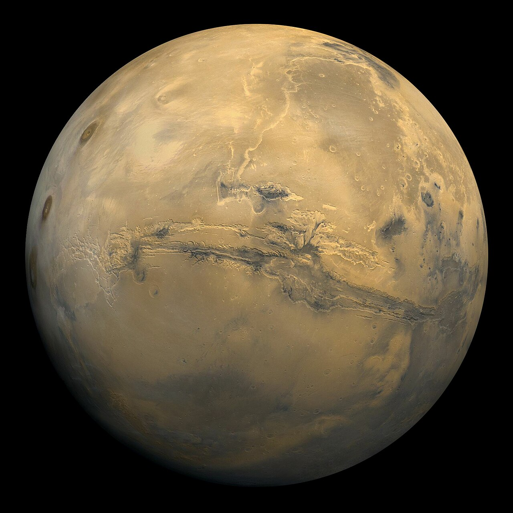
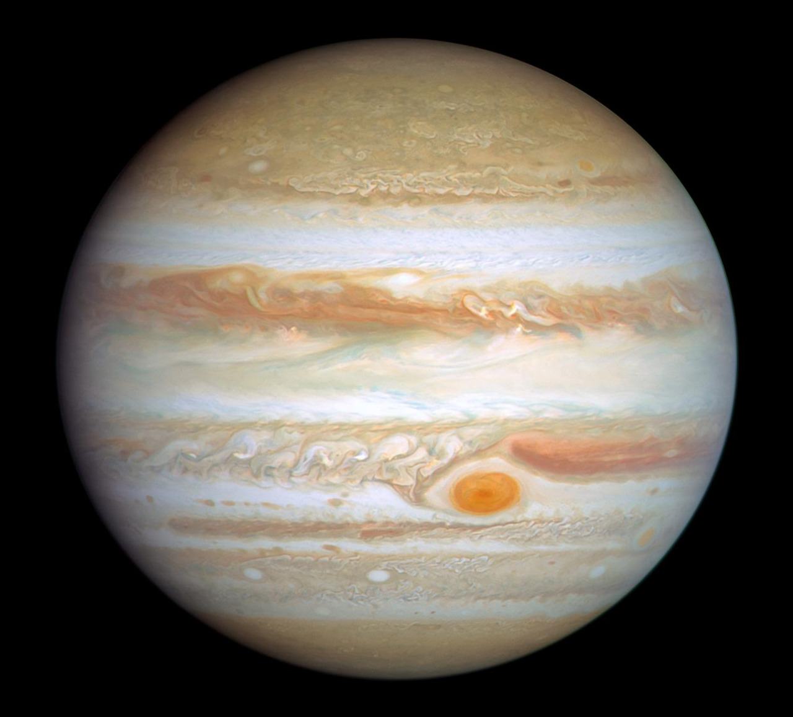
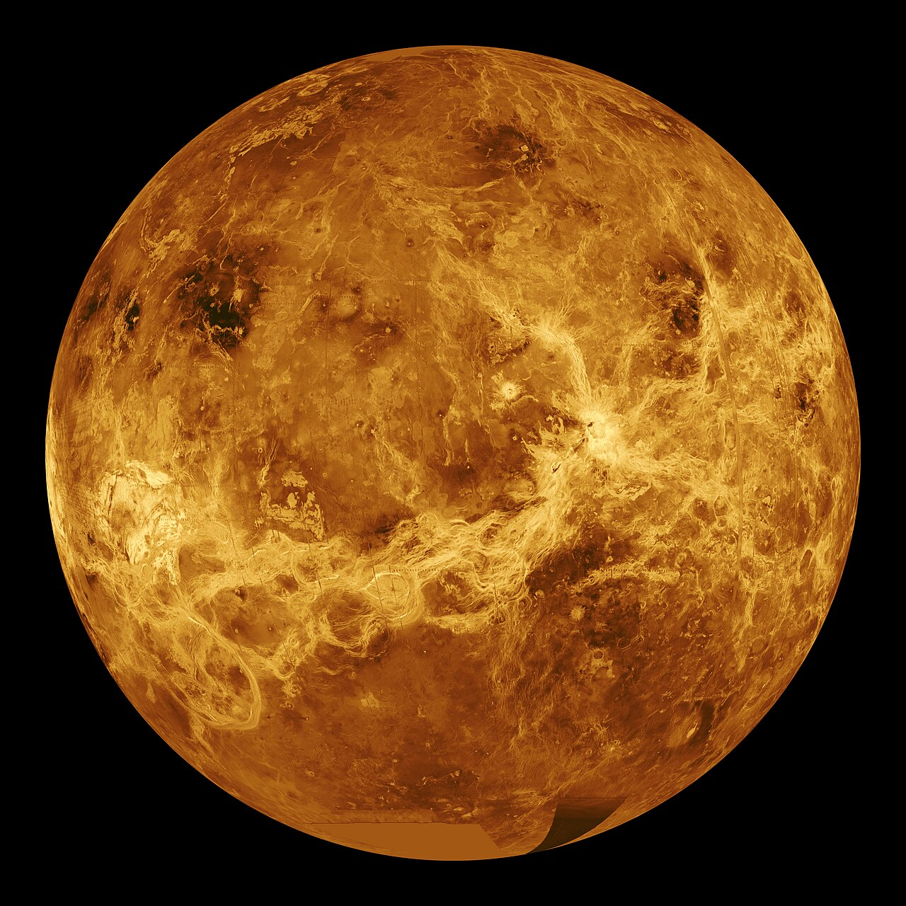

1. Марс — Червона планета

Марс — четверта планета Сонячної системи. Вона має тонку атмосферу та поверхню, що нагадує місячні кратери та земні вулкани й пустелі.
Автор статті: Д-р Олексій Коваленко

Марс — четверта планета Сонячної системи. Вона має тонку атмосферу та поверхню, що нагадує місячні кратери та земні вулкани й пустелі.
Автор статті: Д-р Олексій Коваленко

Юпітер — найбільша планета Сонячної системи. Це газовий гігант із масою, більшою за масу всіх інших планет разом узятих.
Автор статті: Д-р Олексій Коваленко

Венера — друга від Сонця планета. Вона має дуже щільну атмосферу із вуглекислого газу, що створює потужний парниковий ефект.
Автор статті: Д-р Олексій Коваленко